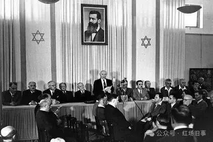
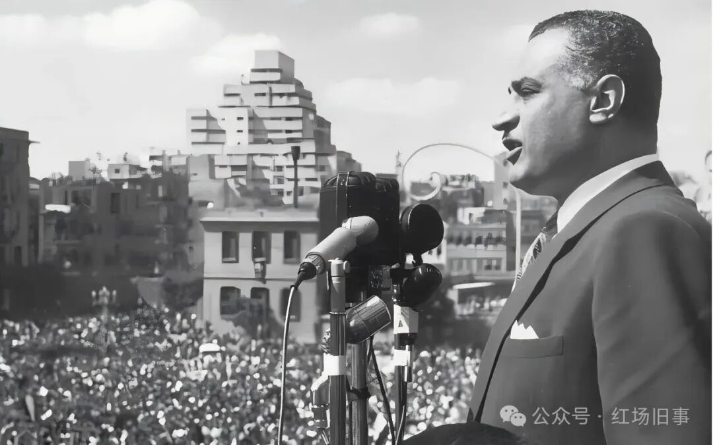
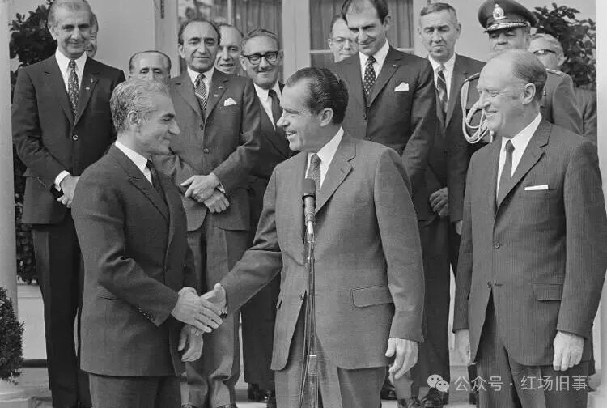

1950年3月，德黑兰的一纸秘密电报，让整个中东为之震动。一个以什叶派为国教的波斯王朝，竟然成为继土耳其之后第二个承认以色列的穆斯林大国。在整个阿拉伯世界愤怒的声讨中，巴列维国王不为所动。此后的三十年里，伊朗向以色列供应了80%的进口石油，以色列帮伊朗训练了令人闻风丧胆的秘密警察。两国工程师在德黑兰街头并肩施工，犹太商人在伊斯法罕的集市自由穿行。
这段被遗忘的“蜜月”，究竟是怎样开始的？
一、德黑兰的“背叛”
1948年5月14日，特拉维夫博物馆，本-古里安宣读《独立宣言》，现代以色列国诞生。

1950年3月，伊朗正式承认以色列，成为继土耳其之后第二个承认以色列的穆斯林大国。在整个中东掀起反以浪潮的时刻，巴列维国王的这一决定，无异于一场“背叛”。但这并非出于情感，而是冷冰冰的地缘计算。对以色列而言，建国之初便陷入阿拉伯世界的重重包围。开国元勋本-古里安提出“边缘政策”：既然无法与阿拉伯邻国和解，那就越过他们，与中东的非阿拉伯国家结盟——伊朗、土耳其、埃塞俄比亚，构筑一道战略包围圈。对伊朗而言，巴列维王朝北方面临苏联南下威胁，周边是敌对的阿拉伯民族主义势力。与以色列合作，不仅能获得美国好感，更能牵制共同的敌人——席卷阿拉伯世界的纳赛尔主义。敌人的敌人，就是朋友。
二、被遗忘的“全方位合作”
从20世纪50年代到20世纪70年代末，伊以合作覆盖了几乎所有领域。
石油：以色列的“生命线”
面对阿拉伯产油国的封锁，伊朗成为以色列最大的石油来源。从1959年到1971年，以色列获得的80%至90%原油供应来自伊朗。两国合资成立“跨亚石油公司”，铺设从埃拉特到阿什凯隆的输油管道，将伊朗原油运往地中海。这条管道让以色列摆脱了对苏伊士运河的依赖——而苏伊士运河当时掌握在敌对的埃及手中。
军事：从“萨瓦克”到“鲜花工程”
以色列帮助巴列维国王建立了令人闻风丧胆的秘密警察机构“萨瓦克”。这个机构成为巴列维巩固权力的利器，而其背后，站着摩萨德的教官。20世纪70年代，随着伊朗石油收入激增，两国启动代号“鲜花工程”的秘密军事合作。以色列向伊朗出售包括杰里科导弹技术在内的大量尖端武器，伊朗则允许以色列使用其领空监视阿拉伯国家动向。
基建：以色列工程师在德黑兰
在德黑兰的巴扎尔甘大街上，以色列工程师帮助建造了当时中东最先进的雷达站。以色列建筑公司承建了德黑兰希尔顿酒店、伊斯法罕的美国军人住宅区。更令人意外的是，20世纪70年代，以色列政府公司Tahal曾为德黑兰设计并建造了下水道系统。2000年，当伊朗官员希望更新这套老化的系统时，他们竟然通过德国商人秘密联系以色列，索要当年的设计蓝图。这段轶事揭示了一个惊人的事实：即便在断交二十多年后，伊朗仍在使用以色列工程师留下的城市遗产。
人道：伊拉克犹太人的“秘密通道”
以色列建国后，伊拉克犹太人处境堪忧。由于伊朗与伊拉克有漫长的边界，以色列通过与伊朗合作，帮助数万伊拉克犹太人经伊朗秘密移民以色列。德黑兰的街头，一度出现了希伯来语标识的商店。
三、共同的敌人
这段蜜月的维系，除了彼此需要，还有一个关键因素——共同的敌人。埃及总统纳赛尔领导的阿拉伯民族主义浪潮，席卷整个中东。纳赛尔不仅敌视以色列，也威胁巴列维王朝的统治。两国对纳赛尔的共同恐惧，成为合作的强大驱动力。

另一个共同的敌人是苏联。沙俄曾多次侵占波斯领土，苏联又支持中东激进势力。对伊朗而言，与以色列合作，也是向美国示好、换取对抗苏联保护的方式。敌人的敌人是朋友——当两个敌人同时指向同一个方向，友谊便有了坚实的基础。
四、裂痕初现
然而，这段关系并非没有裂痕。1973年第四次中东战争期间，阿拉伯国家动用石油武器，让巴列维对阿拉伯世界的力量有了新的认识。他开始意识到，伊朗的长治久安也需要获得阿拉伯国家的承认。1975年，伊朗投票支持联合国将犹太复国主义视为“种族主义”的决议。这无疑是对以色列的一记耳光。但即便如此，两国的实质性合作仍在继续。表面的裂痕，掩盖不了底层的利益交织。直到1979年的那个冬天，一切都戛然而止。
五、美苏如何浇灌这段“婚姻”？
当我们在梳理这段蜜月时，一个更隐秘的问题浮现：是谁让这段“跨越宗教的婚姻”成为可能？答案，隐藏在冷战的棋盘上。1953年，美国中央情报局与英国军情六处联手策划“阿贾克斯行动”，推翻了伊朗民选首相摩萨台，将巴列维重新扶上孔雀宝座。从此，伊朗成为美国在中东的“双子塔”之一。另一个，正是以色列。美国需要伊朗充当波斯湾的“宪兵”，需要以色列威慑激进的阿拉伯民族主义。于是，华盛顿默许甚至鼓励这两个“战略资产”之间的合作。美国军售同时流向德黑兰和特拉维夫，两国军官在美国的培训基地里成为同学。

而苏联呢？斯大林晚年对以色列的“变节”深感失望。那个他曾亲手在联合国扶植起来的犹太国家，竟在朝鲜战争中倒向美国。莫斯科转而支持埃及、叙利亚等“激进阿拉伯国家”。对于伊以联盟，苏联选择了容忍：只要这两个亲美国家不直接威胁苏联利益，就不值得为此大动干戈。美苏的“默契”，成为这段蜜月最隐秘的催化剂。两个超级大国，各自出于不同的算计，共同浇灌了这朵绽放在中东沙漠中的“波犹友谊之花”。
六、下集预告
20世纪70年代，当伊以合作达到顶峰时，两国启动了一项代号“鲜花工程”的秘密计划——联合研发可携带核弹头的地对地导弹。德黑兰的实验室里，以色列核专家与伊朗工程师并肩工作；内盖夫的沙漠中，两国军官共同测试导弹轨迹。而这一切的背后，站着美苏两个超级大国：美国向伊朗出售核反应堆，默许其“对核技术产生兴趣”；苏联则睁一只眼闭一只眼，不愿因此破坏与伊朗的微妙关系。谁也没想到，正是美苏亲手浇灌的这朵“鲜花”，将在半个世纪后结出最致命的果实——那个让整个中东夜不能寐的“伊朗核威胁”。下一集《中东风云：“鲜花工程”与核种子——美苏如何浇灌这段婚姻》，我们揭开大国博弈下，那场被掩埋的核秘密。哈梅内伊、苏莱曼尼、内贾德：一个时代的终结打不起 怂不住：坐拥世界级资源的伊朗，为何活成了“中东穷人”？
文字与图片版权归各自权利人所有；排版根据抓取内容整理。